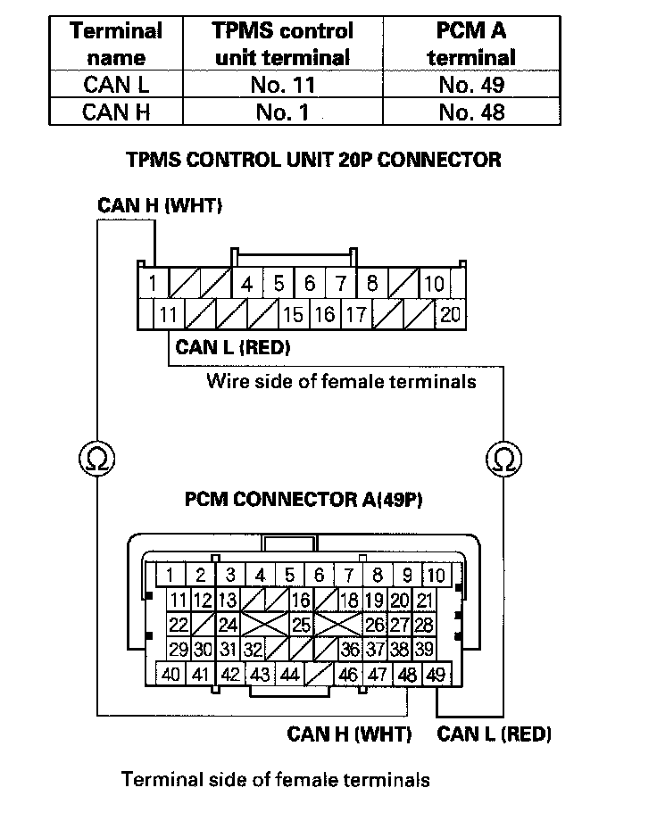

DTC 85
DTC 85: CAN Data ErrorNOTE: Check the fuel and emission systems DTCs with the HDS, and troubleshoot the PCM and F-CAN communication errors first.
1. Turn the ignition switch ON (II).
2. Clear the DTC with the HDS.
3. Turn the ignition switch OFF, then turn the ignition switch ON (II) again.
4. Wait about 5 seconds.
5. Check for DTCs with the HDS.
Is DTC 85 indicated?
YES - Go to step 6.
NO - The system is OK at this time.
6. Test-drive the vehicle.
Does the speedometer work?
YES - Go to step 10.
NO - Go to step 7.
7. Turn the ignition switch OFF.
8. Disconnect the TPMS control unit 20P connector.
9. Test-drive the vehicle.
Does the speedometer work?
YES - Check for loose terminals and poor connections at the TPMS control unit. If necessary, substitute a known-good TPMS control unit and recheck.
NO - Turn the ignition switch OFF, and reconnect all connectors, then check and troubleshoot the fuel and emissions systems.
10. Turn the ignition switch OFF.
11. Short the SCS line with the HDS.
12. Disconnect PCM connector A (49P).
13. Disconnect the TPMS control unit 20P connector.
14. Check for continuity between the TPMS control unit 20P connector terminals and the PCM connector A (49P) terminals individually (see table).

Is there continuity?
YES - Check for loose terminals and poor connections at the TPMS control unit. If necessary, substitute a known-good TPMS control unit and recheck.
NO - Repair open in the wire between the TPMS control unit and the PCM.